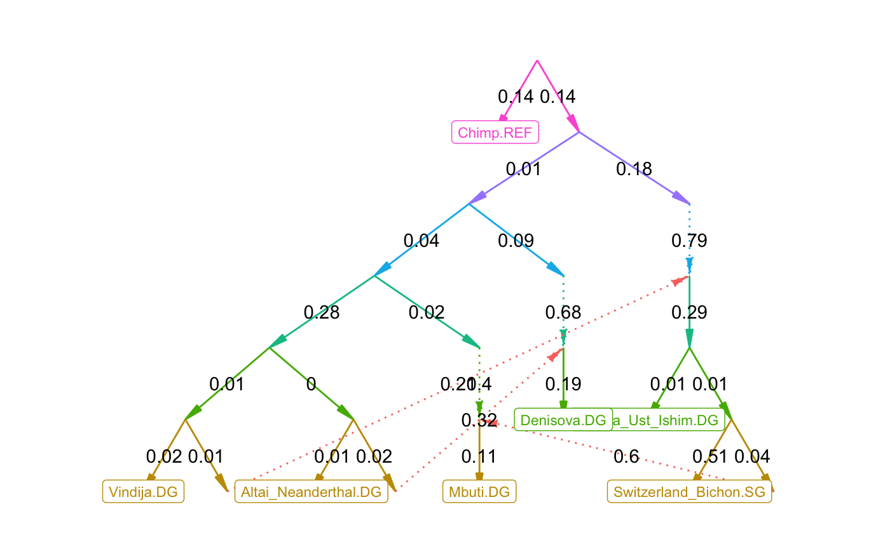
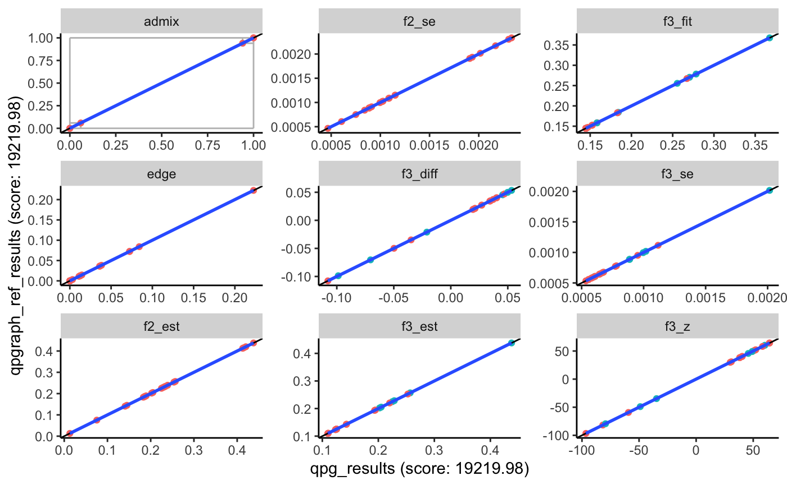

admixtools.RmdThis tutorial gives an overview of the basic workflow for computing f-statistics, and using qpWave, qpAdm, and qpGraph. Documentation for each ADMIXTOOLS function can be found under Reference, and more detailed information about specific topics under Articles.
Admixtools is a set of programs used to infer population histories from f-statistics computed from genetic data. ADMIXTOOLS 2 divides the computation into two steps:
ADMIXTOOLS 2 can either be run through the R command line, or through a browser application that can be launched like this:
The documentation of the browser application can be accessed through the ? in the upper right corner of the application window. This website documents the R command line interface.
For the examples below the following R packages need to be loaded.
\(f_2\), \(f_3\), and \(f_4\) describe how populations are related to one another, and they form the basis of ADMIXTOOLS. Here we briefly describe what they are and how to compute them. Two excellent papers on f-statistics can be found here and here.
\(f_2\) is the expected squared difference in allele frequencies between two populations \(A\) and \(B\). (Allele frequencies are denoted in lower case letters here.) We can estimate it by averaging over \(M\) SNPs: \[f_2(A,B) = \frac{1}{M} \sum_{j=1}^M(a_{j} - b_{j})^2\]
\(f_4\) is the covariance of allele frequency differences between two pairs of populations, and at the same time the sum of four f2-statistics: \[ \begin{equation} \begin{aligned} f_4(A, B; C, D) &= \frac{1}{M}\sum_{j=1}^M(a_{j} - b_{j})(c_{j} - d_{j}) \\ &= \frac{1}{2}(f_2(A, D) + f_2(B, C) - f_2(A, C) - f_2(B, D) ) \label{eq:f42} \end{aligned} \end{equation} \]
\(f_3\) is the covariance of allele frequency differences between two pairs of populations where one population is the same on both sides. \(f_3\) is thus a special case of \(f_4\), and can also be written as a sum of \(f_2\).
\[ \begin{aligned} f_3(A; B, C) &= f_4(A, B; A, C) \\ &= \frac{1}{2} (f_2(A, B) + f_2(A, C) - f_2(B, C)) \end{aligned} \]
In practice, the estimation of f-statistics can be more complicated, as it needs to account for low sample counts, missing data, and differences in ploidy, as described here.
In ADMIXTOOLS 2, f2-statistics are the foundation for all further analyses. They can be computed from genotype data and saved to disk with this command:
This will look for genotype files in packedancestrymap or PLINK format, compute allele frequencies and blocked f2 statistics for all pairs of populations defined in the .ind or .fam file, and write them to my_f2_dir. It is also possible to extract only a subset of the samples or populations by passing IDs to the inds and pops arguments in extract_f2. To get a description of the arguemnts and to see examples of how to use it, type
Once finished, f2-statistics for the populations of interest can be loaded like this.
Or you can load only a subset of the populations:
mypops = c('Denisova.DG', 'Altai_Neanderthal.DG', 'Vindija.DG')
f2_blocks = f2_from_precomp(my_f2_dir, pops = mypops)f2_blocks is now a 3d-array with f2-statistics for each population pair (along dimensions 1 and 2) and each SNP block (along the 3rd dimension).
## [1] 7 7 708Separate estimates for each SNP block make it possible to compute jackknife or bootstrap standard errors for any f-statistic, and for any other estimated parameter.
f2_blocks can be used like this:
f2_blocks[,,1] # f2-statistics of the 1st SNP block
apply(f2_blocks, 1:2, mean) # average across all blocks
f2_blocks[pop1, pop2, ] # f2(pop1, pop2) for all blocksThe names along the 3rd dimension contain the SNP block lengths:
## [1] 424 772 795 835 574 842If you want to try any of this without extracting and loading your own f2-statistics, you can instead use example_f2_blocks which becomes available as you load admixtools.
For more information on f-statistics in ADMIXTOOLS 2, click here.
The original ADMIXTOOLS program for computing \(f_3\)-statistics is called qp3Pop. In ADMIXTOOLS 2, you can compute \(f_3\)-statistics like this:
pop1 = 'Denisova.DG'
pop2 = c('Altai_Neanderthal.DG', 'Vindija.DG')
pop3 = c('Chimp.REF', 'Mbuti.DG', 'Russia_Ust_Ishim.DG')Or, equivalently
## # A tibble: 6 x 7
## pop1 pop2 pop3 est se z p
## <chr> <chr> <chr> <dbl> <dbl> <dbl> <dbl>
## 1 Denisova.DG Altai_Neanderthal.DG Chimp.REF 0.0591 5.98e-4 98.7 0
## 2 Denisova.DG Altai_Neanderthal.DG Mbuti.DG 0.0720 6.47e-4 111. 0
## 3 Denisova.DG Altai_Neanderthal.DG Russia_Ust_Ishim.… 0.0742 7.02e-4 106. 0
## 4 Denisova.DG Vindija.DG Chimp.REF 0.0594 5.92e-4 100. 0
## 5 Denisova.DG Vindija.DG Mbuti.DG 0.0724 6.34e-4 114. 0
## 6 Denisova.DG Vindija.DG Russia_Ust_Ishim.… 0.0750 6.96e-4 108. 0This will compute f3-statistics for all combinations of pop1, pop2, and pop3. Typing just f3(f2_blocks) will compute all possible combinations (which can be a large number). If only pop1 is supplied, all combinations of populations in pop1 will be computed.
The original ADMIXTOOLS program for computing \(f_4\)-statistics is called qpDstat. As the name suggests, it computes D-statistics by default. To get \(f_4\)-statistics instead, the f4mode argument needs to set to YES. In ADMIXTOOLS 2, almost everything starts with f2-statistics, so the qpdstat/f4 function computes \(f_4\)-statistics by default.
f4(f2_blocks, pop1, pop2, pop3, pop4)
qpdstat(f2_blocks, pop1, pop2, pop3, pop4)
# two names for the same function## # A tibble: 6 x 8
## pop1 pop2 pop3 pop4 est se z p
## <chr> <chr> <chr> <chr> <dbl> <dbl> <dbl> <dbl>
## 1 Denisov… Altai_Nean… Chimp.REF Switzerlan… 1.50e-2 4.64e-4 32.3 6.06e-229
## 2 Denisov… Altai_Nean… Mbuti.DG Switzerlan… 2.03e-3 3.53e-4 5.75 8.85e- 9
## 3 Denisov… Altai_Nean… Russia_Ust… Switzerlan… -2.17e-4 3.73e-4 -0.580 5.62e- 1
## 4 Denisov… Vindija.DG Chimp.REF Switzerlan… 1.54e-2 4.78e-4 32.2 5.81e-228
## 5 Denisov… Vindija.DG Mbuti.DG Switzerlan… 2.33e-3 3.63e-4 6.42 1.40e- 10
## 6 Denisov… Vindija.DG Russia_Ust… Switzerlan… -2.40e-4 3.87e-4 -0.620 5.35e- 1The differences between \(f_4\)-statistics and D-statistics are usually negligible. However, it is still possible to compute D-statistics in ADMIXTOOLS 2, by providing genotype data as the first argument, and setting f4mode = FALSE:
Computing \(f_4\)- or D-statistics from genotype data directly is slower, but it has the advantage that it avoids any problems that may arise from large amounts of missing data. More on this here.
qpWave and qpAdm are two programs with diffent goals - one estimates the number of admixture events, the other admixture weights - but they perform almost the same computations. The key difference is that qpWave is about comparing two sets of populations (left and right), while qpAdm is about testing how a single target population (which can be one of the left populations) relates to left and right. In ADMIXTOOLS 2, both qpadm() and qpwave()require at least three arguments:
qpadm() additionally requires a target population as the 4th argument, which will be modelled as a mixture of left populations.
left = c('Altai_Neanderthal.DG', 'Vindija.DG')
right = c('Chimp.REF', 'Mbuti.DG', 'Russia_Ust_Ishim.DG', 'Switzerland_Bichon.SG')
target = 'Denisova.DG'
pops = c(left, right, target)Both functions will return \(f_4\)-statistics, and a data frame that shows how well the \(f_4\)-matrix can be approximated by lower rank matrices. The last line tests for rank 0, which is equivalent to testing whether the left populations form a clade with respect to the right populations.
## # A tibble: 3 x 8
## pop1 pop2 pop3 pop4 est se z p
## <chr> <chr> <chr> <chr> <dbl> <dbl> <dbl> <dbl>
## 1 Altai_Neander… Vindija… Chimp.R… Mbuti.DG 1.24e-4 1.35e-4 0.920 0.358
## 2 Altai_Neander… Vindija… Chimp.R… Russia_Ust_Ish… 4.45e-4 1.64e-4 2.72 0.00653
## 3 Altai_Neander… Vindija… Chimp.R… Switzerland_Bi… 4.22e-4 1.72e-4 2.45 0.0144## # A tibble: 1 x 7
## f4rank dof chisq p dofdiff chisqdiff p_nested
## * <int> <int> <dbl> <dbl> <int> <dbl> <dbl>
## 1 0 3 11.9 0.00768 NA NA NAqpadm() will also compute admixture weights and nested models:
fit, in the second column.## # A tibble: 2 x 5
## target left weight se z
## <chr> <chr> <dbl> <dbl> <dbl>
## 1 Denisova.DG Altai_Neanderthal.DG 49.6 23.3 2.13
## 2 Denisova.DG Vindija.DG -48.6 23.3 -2.08## # A tibble: 3 x 13
## pat wt dof chisq p f4rank Altai_Neanderth… Vindija.DG feasible
## <chr> <dbl> <dbl> <dbl> <dbl> <dbl> <dbl> <dbl> <lgl>
## 1 00 0 2 7.15e0 0.0280 1 49.6 -48.6 FALSE
## 2 01 1 3 1.14e4 0 0 1 NA TRUE
## 3 10 1 3 1.14e4 0 0 NA 1 TRUE
## # … with 4 more variables: best <lgl>, dofdiff <dbl>, chisqdiff <dbl>,
## # p_nested <dbl>The following two functions can be used to explore many qpWave or qpAdm models at the same time.
qpwave_pairs() forms all pairs of left populations and tests whether they form a clade with respect to the right populations.
## # A tibble: 6 x 4
## pop1 pop2 chisq p
## <chr> <chr> <dbl> <dbl>
## 1 Altai_Neanderthal.DG Denisova.DG 1507. 0
## 2 Altai_Neanderthal.DG Vindija.DG 11.9 0.00768
## 3 Denisova.DG Altai_Neanderthal.DG 1507. 0
## 4 Denisova.DG Vindija.DG 1510. 0
## 5 Vindija.DG Altai_Neanderthal.DG 11.9 0.00768
## 6 Vindija.DG Denisova.DG 1510. 0qpadm_rotate() tests many qpadm() models at a time. For each model, the left populations will be split into two groups: The first group will make up the actual left populations passed to qpadm(), while the second group will be added to the right populations.
## ℹ Evaluating 25 models...## # A tibble: 25 x 7
## left right f4rank dof chisq p feasible
## <list> <list> <dbl> <dbl> <dbl> <dbl> <lgl>
## 1 <chr [1]> <chr [4]> 0 5 26194. 0. TRUE
## 2 <chr [1]> <chr [4]> 0 5 53965. 0. TRUE
## 3 <chr [1]> <chr [4]> 0 5 43564. 0. TRUE
## 4 <chr [1]> <chr [4]> 0 5 54909. 0. TRUE
## 5 <chr [1]> <chr [4]> 0 5 13167. 0. TRUE
## 6 <chr [2]> <chr [3]> 1 3 10602. 0. FALSE
## 7 <chr [2]> <chr [3]> 1 3 13506. 0. FALSE
## 8 <chr [2]> <chr [3]> 1 3 13447. 0. FALSE
## 9 <chr [2]> <chr [3]> 1 3 72.2 1.46e-15 FALSE
## 10 <chr [2]> <chr [3]> 1 3 4030. 0. FALSE
## # … with 15 more rowsSingle \(f_3\)- and \(f_4\)-statistics can tell us how three or four populations are related to each other. qpGraph generalizes this concept to any number of populations. It takes estimated \(f_3\)-statistics and the topology of an admixtgure graph, finds the edges weights that minimize the difference between fitted and estimated \(f_3\)-statistics, and summarizes that difference in a likelihood score.
## [1] 19219.98Here, example_graph is a specific graph included in this R package, but you can provide any other graph in one of three formats.
lower and upper can be used to constrain certain edges (NA = no constraint).The leaf nodes of this graph have to match the \(f_2\)-statistic population labels, and the graph has to be a valid admixture graph: a directed acyclic graph where each node has no more than two parents. If nodes with more than two children are present (polytomies or multifurcations) they will be split in a random order, and the new drift edges will be constrained to 0.
The output of qpgraph is a list with several items:
Optionally, fitted and estimated f4-statistics can be returned by setting return_f4 = TRUE. When f2_blocks_test is provided, an out-of-sample score is computed and returned as score_test.
The fitted graph can be plotted like this:

or as an interactive plot:
ADMIXTOOLS 2 can automatically find well-fitting graphs, and it has several functions for exploring the topological neighborhood of a graph. These functions are described here.
There are wrapper function which call the origial ADMIXTOOLS programs and read the results. This can be used to check if the results of qpgraph are correct.
binpath = '/home/np29/o2bin/'
env = 'export LD_LIBRARY_PATH=$LD_LIBRARY_PATH:/n/app/openblas/0.2.19/lib/:/n/app/gsl/2.3/lib/;'
qp3pop_bin = paste0(env, binpath, 'qp3pop')
qpdstat_bin = paste0(env, binpath, 'qpDstat')
qpadm_bin = paste0(env, binpath, 'qpAdm')
qpgraph_bin = paste0(env, binpath, 'qpGraph')
#prefix = '/n/groups/reich/DAVID/V42/V42.1/v42.1'
prefix = '/n/groups/reich/robert/projects/admixprograms/v42.1_small'
outdir = 'write/files/here/'
qp3pop_wrapper(source1 = pop2, source2 = pop3, target = pop1,
qp3pop_bin, prefix, outdir)
qpdstat_wrapper(pop1, pop2, pop3, pop4,
qpdstat_bin, prefix, outdir)
qpadm_wrapper(left, right, target,
qpadm_bin, prefix, outdir)
qpgraph_wrapper(example_graph,
qpgraph_bin, prefix, outdir)Unless outdir is specified, calling these wrapper functions may overwrite files in the working directory!
If you already have existing parameter files and population or graph files, you can run the wrapper functions like this (though the different programs will require different parfiles and popfiles):
qp3pop_wrapper (parfile = 'parfile.txt', bin = qp3pop_bin)
qpdstat_wrapper(parfile = 'parfile.txt', bin = qpdstat_bin)
qpadm_wrapper (parfile = 'parfile.txt', bin = qpadm_bin)
qp3pop_wrapper ('popfile.txt', bin = qp3pop_bin, pref = prefix)
qpdstat_wrapper('popfile.txt', bin = qpdstat_bin, pref = prefix)
qpadm_wrapper(left = 'left.txt', right = 'right.txt', bin = qpadm_bin, pref = prefix)
qpgraph_wrapper('graphfile.txt', parfile = 'parfile.txt', bin = qpgraph_bin)The following function makes it easy to compare qpGraph or qpAdm results.
